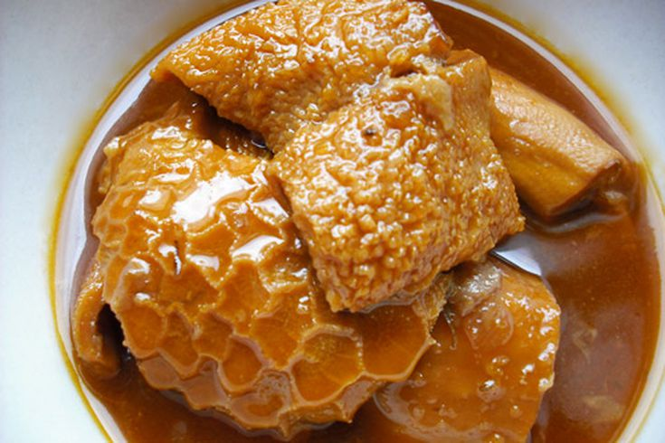

Main-Meals
Choose a Main-Meal of choice
Fish and Chips
Fish and chips is a popular hot dish consisting of fried fish in crispy batter, served with chips.

3>Tripe
Tripe is a type of offal or organ meat. Tripe comes from the stomach of a ruminant—any animal that chews cud. The most commonly available type of tripe is beef tripe, which comes from a cow's stomach.

Jollof Rice
Jollof, or jollof rice, is a rice dish from West Africa. The dish is typically made with long-grain rice, tomatoes, onions, spices, vegetables and meat in a single pot, although its ingredients and preparation methods vary across different regions.